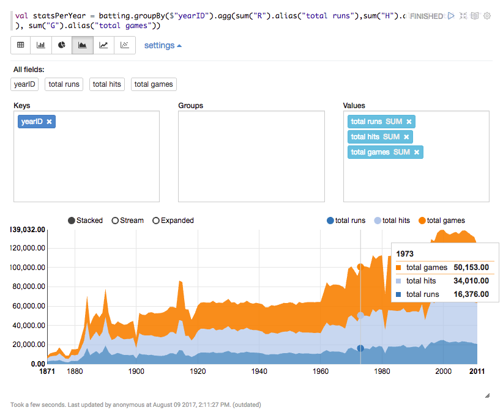

Hello Zeppelin
Apache Zeppelin is an online notebook that lets you interact with a HADOOP cluster (or any other hadoop/spark installation) through many languages and technology backends.
In this workshop, we will use Zeppelin to explore data with Spark.
Environment setup
To simplify, we will use a local Zeppelin running on a Docker container on your local machine.
What is Docker?
Docker is a tool designed to make it easier to create, deploy, and run applications by using containers.
Containers are a way to package software in a format that can run isolated on a shared operating system. Unlike VMs, containers do not bundle a full operating system - only libraries and settings required to make the software work are needed. This makes for efficient, lightweight, self-contained systems and guarantees that software will always run the same, regardless of where it’s deployed.
By now, you should have Docker running on your machine as well as snorkel set up. Simply start zeppelin (see how to setup Snorkel ?) and navigate to http://localhost:8080/.
Getting Started
Creating a new notebook
On the home page or on the notebook menu, select "create new...". Once the notebook is opened, give it a new name.
Creating folders
Using slashes (/) in the notebook name will automatically create and/or move the notebook into folders.
Basic concepts
A notebook is made of cells, also called paragraphs. A cell has an interpreter that tells Zeppelin which langage/backend to use to run the cell.
The interpreter is configured by writing %<interpreter name> at the top of the cell. Without it, Zeppelin will use the default interpreter, which you can configure by clicking on > interpreters at the top right of the notebook (drag-drop to re-order them, the first one being the default).
You can run cells by clicking on the icon on the right or using the shortcut shift+enter.
shortcuts
Many useful shortcuts exist in edit mode. Click on the at the top right of a notebook to display them.
The first time you run a cell of a given type, an new instance of the interpreter is started (it might take a moment). This instance will then be used for all subsequent run of any cell configured with the same language. This is nice, because it means you can share variables and code between cells.
In case of trouble
If something goes wrong, you can restart an interpreter any time using the > interpreters and then clicking on the icon alongside the interpreter name.
List of interpreter prefixes
Interpreters and prefixes may vary between the installations. On your local Zeppelin, the following interpreters are available:
| Prefix | Description |
|---|---|
%spark |
Spark (scala) |
%pyspark |
Spark (python) |
%sql |
Spark SQL |
%dep |
special syntax to load external dependencies |
%md |
MarkDown cell |
%sh |
shell script (bash) |
%python |
"regular" python |
Note: spark is Spark 1.6, spark2 is Spark 2.1.0.
A first example
To test Zeppelin, create a new notebook.
Shell cell:
On the first cell, enter the snippet below:
%sh echo "The working directory is $(pwd), it contains:" ls
As you can see, this is a regular shell script that will run inside the docker container. The working directory is /zeppelin, which contains some folders that are also available from your filesystem:
| Zeppelin path | Local path | Description |
|---|---|---|
/zeppelin/data |
snorkel/zeppelin/data |
Empty directory you can use to store input and output data |
/zeppelin/logs |
snorkel/zeppelin/logs |
Zeppelin logs |
/zeppelin/notebooks |
snorkel/zeppelin/notebooks |
Where Zeppelin stores the notebooks (in a special .json format)... Don't erase it ! |
/zeppelin/spark-warehouse |
snorkel/zeppelin/spark-warehouse |
A special directory used by Spark for storing temp tables and such |
Markdown cell:
On a new cell, type some markdown and press shift+enter:
%md # Title ## Subtitle I am testing the _Zeppelin_ functionalities, specifically the `%markdown` interpreter. I can even do some nice __latex math__ using the \$\$ delimiters! Example: $$ \frac{N}{4} * log(t) $$
Let's do some python:
On a new cell, type the following:
%python range(0,10)
You should have the result [0, 1, 2, 3, 4, 5, 6, 7, 8, 9] displayed. Now, store the result into a variable:
%python lst = range(0,10)
As you can see, no output is shown. This is because the last statement, here an assignment, does not return anything. To still view the result, add print(lst) at the end of the cell.
Inside a new cell, let's define a function:
%python def add_lists(lst_a, lst_b): """ do an addition term by term between two lists """ return [ a + b for (a, b) in zip(lst_a, lst_b) ]
Once you ran the cell, the function exists in the current context, so you can use it anywhere in your notebook. In case you need to make a change to the function, simply rerun the cell with the updated code.
Warning
When you stop the docker container or reload an interpreter, the current context is lost and you need to rerun the cells.
Battling with pyspark
Let's explore the battling.csv. It is a csv file containing information on baseball games. The columns are:
| Column name | Description |
|---|---|
playerID |
Player ID code |
yearID |
Year |
stint |
player's stint (order of appearances within a season) |
teamID |
Team |
lgID |
League |
G |
Games |
G_batting |
Game as batter |
AB |
At Bats |
R |
Runs |
H |
Hits |
2B |
Doubles |
3B |
Triples |
HR |
Homeruns |
RBI |
Runs Batted In |
SB |
Stolen Bases |
CS |
Caught Stealing |
BB |
Base on Balls |
SO |
Strikeouts |
IBB |
Intentional walks |
HBP |
Hit by pitch |
SH |
Sacrifice hits |
SF |
Sacrifice flies |
GIDP |
Grounded into double plays |
Spark Context
To interact with Spark, we need a Spark Context.
In Zeppelin, the context is created for us and available through the spark variable. Likewise, the Spark SQL Context is stored in the sqlContext variable.
%pyspark print(spark.version) print(sqlContext)
Loading the data
Download the battling.csv file and save it in snorkel/zeppelin/data.
To read CSV data into a Spark Dataframe, nothing is more easy:
%pysark battingFile = "data/Batting.csv" batting = spark.read.csv(battingFile, header=True, mode="DROPMALFORMED", inferSchema=True)
Visualising the data
A SparkDataframe has two interesting methods to visualize the content:
describe(): prints the dataframe schema, i.e. the columns and their typesshow()orshow(numRows, truncate=truncate): prints the content of dataframe as a table. By default, only the first 20 rows are shown and the content of the cells might be truncated from better readability;
%pyspark batting.describe() batting.show()
To have an even better view, we can use the Zeppelin method z.show() (z is a global variable used to interact with Zeppelin):
%pyspark z.show(batting)
Simple aggregation
A Spark Dataframe is like a table, with rows and columns. It is possible to do most of the operations you would do on an SQL table.
First, let's compute some statistics per year:
%pyspark # import the sum function from pyspark.sql.functions import sum # compute aggregations. In SQL, this would be written: statsPerYear = batting\ .groupBy("yearID")\ .agg( sum("R").alias("total runs"), sum("H").alias("total hits"), sum("G").alias("total games"))\ .orderBy("yearID") z.show(statsPerYear)
SQL equivalent
In SQL syntax, this query would look like:
ELECT R as "total runs", H as "total hits", G as "total games" FROM batting GROUP BY yearID ORDER BY yearID
On the interface, select the line chart or area chart and then click on settings. Drag-and-drop the statistics into the Values area:

Interactive queries
Zeppelin offers methods to create simple forms. The basic syntax is:
z.input("<input name>", <default value>)
Let's use an input form to display the hit by pitch per team for a given year:
%pyspark from pyspark.sql.functions import avg # get user input year = z.input("year", 1894) # do the query hbp_results = batting\ .filter(batting.yearID == year)\ .groupBy("teamID")\ .agg(avg("HBP")\ .alias("average hit by pitch")) # display the results z.show(hbp_results)
As you can see, the query is rerun everytime the input changes.
z.input creates a simple input text, but you can also use z.select("input title", labels, values) for a dropdown and z.checkbox("input title", default_value) for multiple choices.
For example, we could create a dropdown for all teams like this:
%pyspark # get all team names all_teams = batting.select("teamID").distinct().collect() # we get a list of Row(teamsId). Get rid of the Row wrapper! all_teams = [r[0] for r in all_teams] # create and show a dropdown form team = z.select("selected team", sorted(zip(all_teams, all_teams))) # go something with the results, for example listing the years when the team played years_played = batting\ .select(batting.yearID.alias('years played'))\ .where(batting.teamID == team)\ .distinct()\ .orderBy("years played") z.show(years_played)
Have a look at the Zeppelin documentation for more information and examples.
Battling with Spark SQL
From the code so far, you might have noticed how similar to SQL queries our code were. What if we could get rid of the difficult python syntax and use a declarative language instead ? Well, we can.
Registering a table
To use the SQL syntax directly, we first need to register our dataframe as a table and give it name:
%pyspark batting.createOrReplaceTempView("batting") # or registerTempTable("batting") for older spark versions
The name can be anything; we will be used in SQL queries, for example in a FROM clause, to refer to the batting dataframe.
Simple aggregation
From now on, we can run SQL-like queries using the sqlContext. For example (the triple quotes in python are for multi-line strings):
%pyspark result = sqlContext.sql( """ SELECT teamID, max(H) as `max hits` FROM batting GROUP BY teamID ORDER BY(`max hits`) DESC LIMIT 10 """) z.show(result)
Column aliases with spaces or special characters must be enclosed in backticks and not straight quotes !
But this is still python. Thanks to Zeppelin, it is possible to run Spark SQL queries and display results directly using a Spark SQL cell. So our query now looks like:
%sql -- tell Zeppelin to use the Spark SQL interpreter SELECT teamID, max(H) as `max hits` FROM batting GROUP BY teamID ORDER BY(`max hits`) DESC LIMIT 10
Interactive queries
Forms fields can also be used in an SQL cell, but the syntax is a bit different:
- simple form:
${input_name=default_value} - dropdown:
${input_name=default_value,value1|value2|valueX}
For example, using an input:
%sql select teamID, avg(HBP) as `average hit per pitch` from batting where yearID = ${year=1984} -- let the user choose the year group by teamID
using a dropdown:
%sql select distinct(yearID) as `years played` from batting where teamID = "${team=OAK,OAK|SFN|SDN|PHI}" -- let the user choose one 4 teams order by `years played`